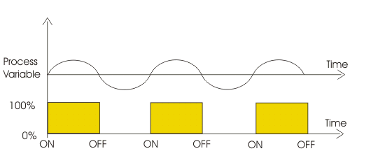
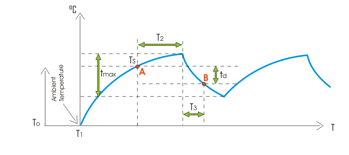

Sometimes, the control element has only two position either it is fully closed or fully open. This control element does not operate at any intermediate position, i.e. partly open or partly closed position. The control system made for controlling such elements, is known as on off control theory. In this control system, when process variable changes and crosses certain preset level, the output valve of the system is suddenly fully opened and gives 100% output.
Generally in on off control system, the output causes change in process variable. Hence due to effect of output, the process variable again starts changing but in reverse direction. During this change, when process variable crosses certain predetermined level, the output valve of the system is immediately closed and output is suddenly reduced to 0%.
As there is no output, the process variable again starts changing in its normal direction. When it crosses the preset level, the output valve of the system is again fully open to give 100% output. This cycle of closing and opening of output valve continues till the said on-off control system is in operation.
A very common example of on-off control theory is fan controlling scheme of transformer cooling system.
When transformer runs with such a load, the temperature of the electrical power transformer rises beyond the preset value at which the cooling fans start rotating with their full capacity.
As the cooling fans run, the forced air (output of the cooling system) decreases the temperature of the transformer.
When the temperature (process variable) comes down below a preset value, the control switch of fans trip and fans stop supplying forced air to the transformer. After that, as there is no cooling effect of fans, the temperature of the transformer again starts rising due to load.
Again when during rising, the temperature crosses the preset value, the fans again start rotating to cool down the transformer.
Theoretically, we assume that there is no lag in the control equipment. That means, there is no time day for on and off operation of control equipment. With this assumption if we draw series of operations of an ideal on off control system, we will get the graph given below.

But in practical on off control, there is always a non zero time delay for closing and opening action of controller elements.
This time delay is known as dead time. Because of this time delay the actual response curve differs from the above shown ideal response curve.
Let us try to draw actual response curve of an on off control system.

Say at time T O the temperature of the transformer starts rising. The measuring instrument of the temperature does not response instantly, as it requires some time delay for heating up and expansion of mercury in temperature sensor bulb say from instant T1 the pointer of the temperature indicator starts rising. This rising is exponential in nature. Let us at point A, the controller system starts actuating for switching on cooling fans and finally after period of T2 the fans starts delivering force air with its full capacity. Then the temperature of the transformer starts decreasing in exponential manner.
At point B, the controller system starts actuating for switching off the cooling fans and finally after a period of T3 the fans stop delivering force air. Then the temperature of the transformer again starts rising in same exponential manner.
N.B.: Here during this operation we have assumed that, loading condition of the electrical power transformer, ambient temperature and all other conditions of surrounding are fixed and constant.
 by
by